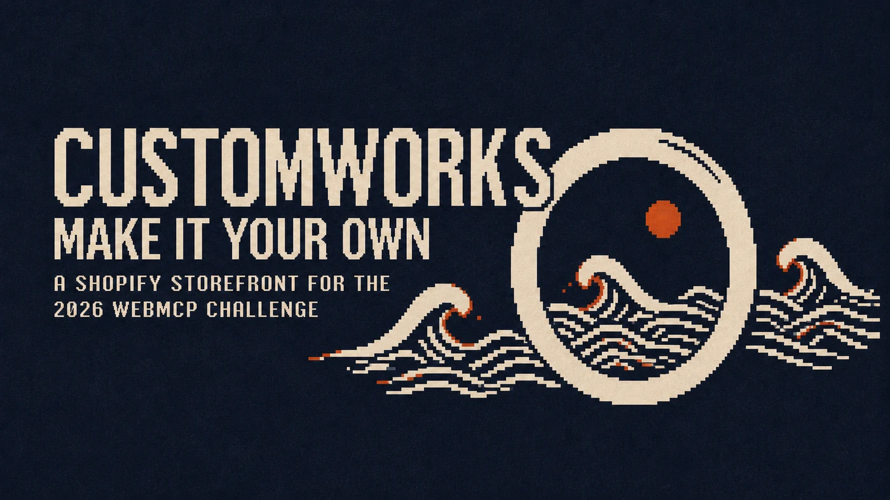

Tokuchu: RSVP Application with Attendee States
Collects attendee data, reconciles requirements, tracks readiness, and records the approved procurement.
A customized product procurement moves through four purpose-level utilities. WebMCP functions sit beneath each utility, carrying only the information needed for the next decision.
Collects attendee data, reconciles requirements, tracks readiness, and records the approved procurement.
get_customizationadd_customized_to_cartget_order_updates
Defines product constraints, accepts personalized cart items, and owns checkout and order status.
Understands the audience, budget, destination, and which attendees should receive the product.
list_guestssearch_giftsset_gift_planset_gift_customizationFinds a suitable product and declares its recipient-specific fields, variants, and constraints.
search_catalogget_productget_customizationMaps requirements to known records, then asks only for recipient values that are still missing.
get_requirementsset_personalization_mappingrequest_from_attendeeslist_missingEach attendee answers or corrects only their own required values under the store's constraints.
submit_rsvpBuilds the minimal fulfilment manifest and freezes the organizer's approval at an exact revision.
get_fulfillment_manifestapprove_specspost_updateValidates one configured item per recipient, creates the cart, and returns the checkout.
add_customized_to_cartcreate_checkoutget_order_updatesExposes only this procurement's approved fields, revisions, updates, and exceptions.
get_procurementget_fulfillment_manifestget_changesacknowledge_changesReports progress or asks for clarification on one attendee requirement without seeing unrelated RSVP data.
post_procurement_updateThe mode changes who crosses the website boundary, not the purpose or ownership of the data.